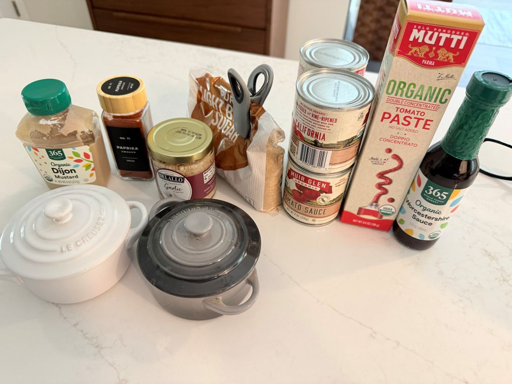
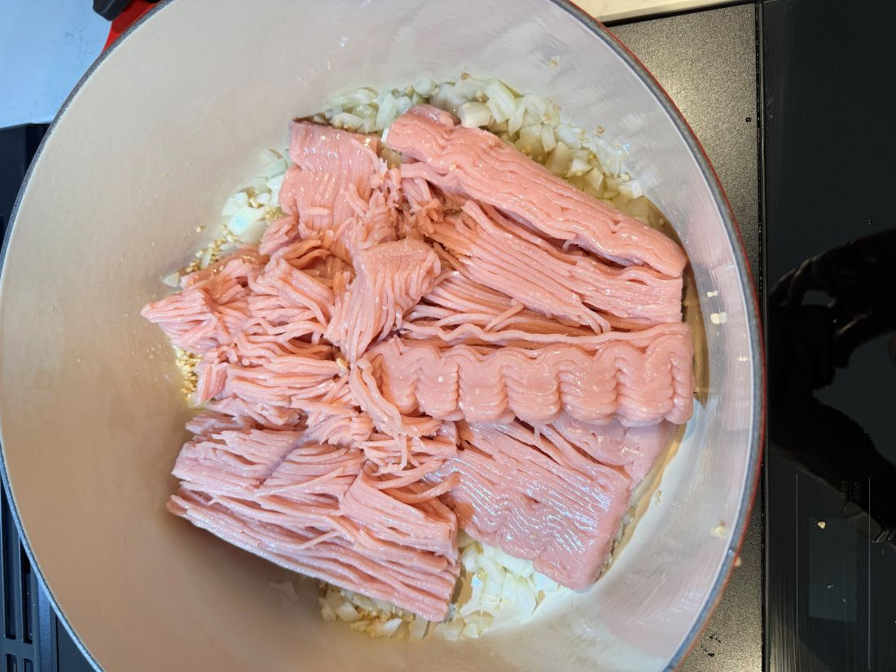
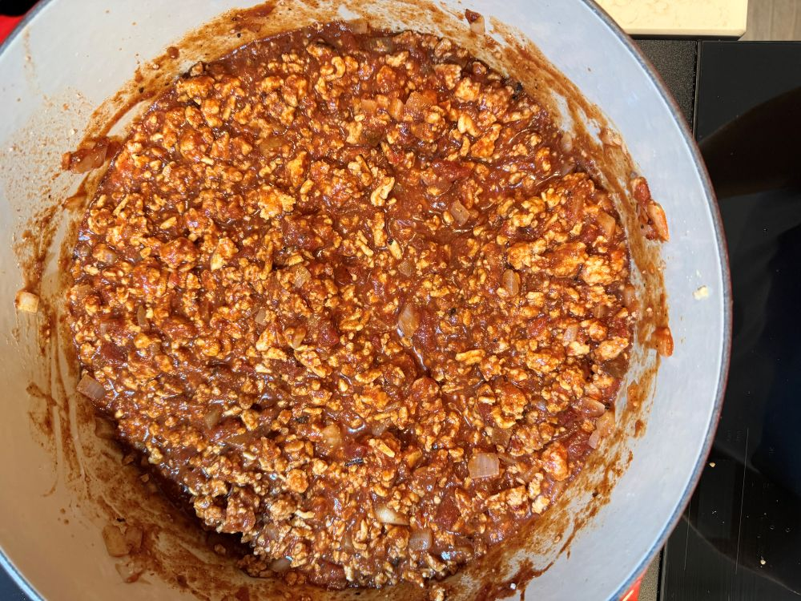

Thistle & Cypress · Kitchen
Sloppy Rick's (Healthy Turkey Sloppy Joes)
A lean, flavorful twist on a classic comfort food favorite using ground turkey and a tangy homemade sauce.
Overview
Comfort food doesn't have to be heavy. By substituting lean ground turkey for beef and building a tangy, sweet-and-savory tomato foundation from scratch, Sloppy Rick's delivers all the nostalgic messiness of the classic childhood favorite with a fresh, modern balance.
Ingredients

- 1 lb lean ground turkey
- 1/2 yellow onion, diced
- 1/2 green bell pepper, diced
- 2 cloves garlic, minced
- 3/4 cup tomato ketchup
- 1 tbsp tomato paste
- 1 tbsp Worcestershire sauce
- 1 tbsp brown sugar
- 1 tsp yellow mustard
- Salt and black pepper to taste
- Burger buns for serving
Method
1. Brown the Meat
- Heat a large skillet over medium-high heat.
- Add the ground turkey, diced onion, and green bell pepper. Cook until the turkey is browned and the vegetables are tender, breaking the meat apart as it cooks (about 5 to 7 minutes).
- Stir in the minced garlic and cook for 1 more minute until fragrant.

2. Simmer the Sauce
- Reduce the skillet heat to medium-low.
- Add the ketchup, tomato paste, Worcestershire sauce, brown sugar, and yellow mustard directly to the pan.
- Stir well to combine all ingredients thoroughly. Season with salt and black pepper to taste.
- Let the mixture simmer gently for 5 to 10 minutes until the sauce thickens and beautifully coats the turkey.
3. Assemble and Serve
- Lightly toast your burger buns if desired.
- Spoon the warm sloppy joe mixture generously over the bottom buns, cap with the tops, and serve immediately!

Notes
For an extra kick, add a dash of hot sauce or a pinch of red pepper flakes to the sauce mixture while it simmers. If the sauce becomes too thick during the simmer, stir in a tablespoon of water or chicken broth at a time to reach your desired consistency.